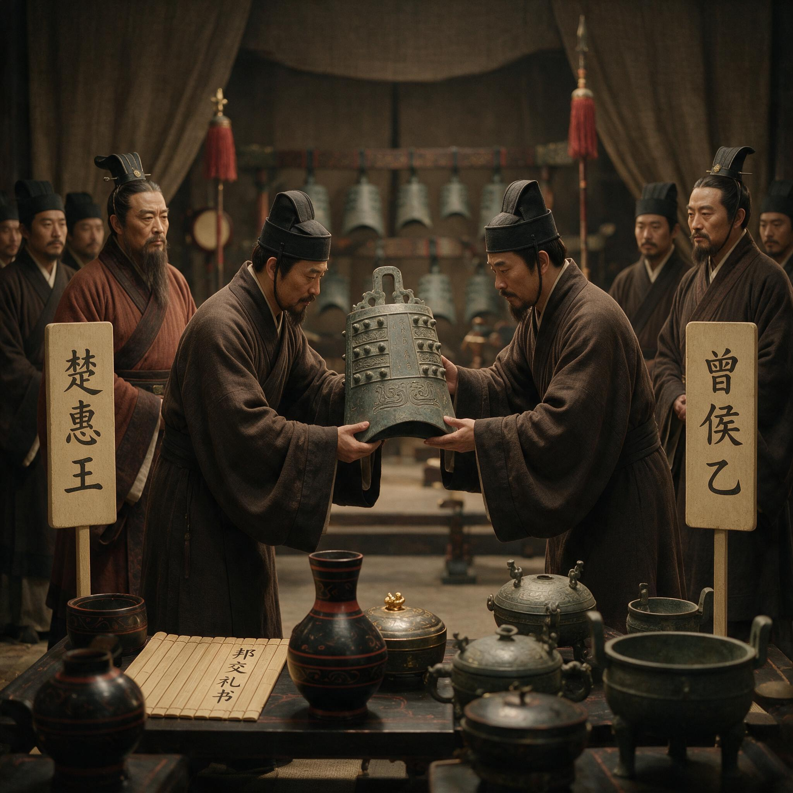

第 20 章
一镈之赠的邦交术
墓葬内木炭的实验测量结果，证实了将其年代推定为公元前433年稍晚是可靠的。这句话写在考古报告里，平淡得像一句气象记录。
但你要是站在1978年随县擂鼓墩那个闷热的夏天，站在刚抽干水的椁室里，看那些泡了两千四百年的木炭被一筐一筐提上来——你就会明白，这句话的分量不在“测量”两个字，在“稍晚”。稍晚。晚于什么时候？晚于那件镈钟上的纪年。

楚惠王赠曾侯乙镈钟
AI 生成插图，非史实影像。
我们先把时间锚定。楚惠王五十六年，也就是公元前四三三年，这位楚王做了一件事：他专门铸造了一件镈钟，派人送到曾国，送给曾侯乙。镈钟上铸着三十一字铭文，开头就是楚惠王五十六年——这是墓里唯一一件带着绝对纪年的器物，像一根钉子，把整座墓的时间坐标钉死在公元前四三三年之后。
而木炭的碳十四测年说，下葬时间比这个年份稍晚。晚多久？几个月？一两年？考古学家没有给出更精确的数字，因为碳十四测年本身就有误差范围。
但“稍晚”这两个字已经够了——它告诉我们，曾侯乙是在收到这件镈钟之后不久下葬的。收到一件楚王送的钟，然后入土。
这不是巧合。列位看官，今天我们不谈九鼎八簋的礼制密码，也不谈漆木器里的楚风暗涌。今天只讲一件器物——一件镈钟。它的主人姓熊名章，谥号楚惠王。它的收件人姓姬名乙，谥号曾侯。这件钟从郢都出发，沿着汉水北上，进入随枣走廊，最后挂在了擂鼓墩地下的一座椁室里。它挂在那里两千四百年，直到1978年考古队员抽干积水，看见它还挂在编钟架的下层，和曾侯乙自己铸造的四十五件甬钟排在一起。
一件楚王的钟，挂在曾侯的编钟架子上。这件事本身就是一个政治事件。我们先看这件镈钟本身。楚王熊章镈，通高九十二点五厘米，重一百三十四点八公斤，青铜铸造，通体绿锈。形制是典型的春秋晚期到战国早期的镈钟样式：合瓦形腔体，平口，钮作双龙对峙状，篆间饰蟠螭纹，隧部饰兽面纹。放在编钟架子上，它不算最大——曾侯乙自己铸的那套甬钟里，最大的一件通高一百五十三点四厘米，比它高出大半个头。但它的位置很特殊：它挂在编钟架的下层，和曾侯乙自铸的大型甬钟排在一起，共同构成整套编钟的低音区。
这里需要解释一下曾侯乙编钟的布局。整套编钟六十五件，分三层悬挂在曲尺形的钟架上。上层三组十九件钮钟，中下层五组四十五件甬钟，外加一件镈钟——就是这件楚王熊章镈。编钟的排列不是按大小随便摆的，而是按照音律体系严格编组。每一件钟的正面和侧面各能发出一个音，两个音之间相差三度。整套编钟的音域跨越五个半八度，中心音域十二个半音齐备——这意味着它可以演奏当时任何一种调式的乐曲。楚王送的这件镈钟，被编进了这套精密的声音机器里。它不是摆在外面当摆设的，它要参与演奏。
这就引出了第一个问题：楚王为什么要送钟？答案在铭文里。三十一字铭文，释读出来是这样的：楚惠王五十六年，从西阳返回，楚王熊章为曾侯乙制作宗庙祭器，安放在西阳，永远用来祭祀享用。注意几个关键词。“宗彝”——这是宗庙祭器，不是日常用品。“奠”——安放、安置，带有郑重其事的仪式感。
“永时用享”——永远按时祭祀享用，这是宗法制度里的标准用语，意味着这件器物将进入受赠者的祭祀体系，成为祖先神灵享用祭品的媒介。楚王送的不是一件礼物。他送的是一次祭祀。在古代中国的宗法体系里，祭祀是最核心的政治行为。谁祭祀谁，怎么祭祀，用什么样的器物祭祀——这些不是私人信仰问题，是权力关系问题。
一个诸侯国的君主，他的祭祀对象是自己的祖先，祭祀权力来源于自己的血统。如果另一个国家的君主送他一件祭器，并且告诉他用这件器物来祭祀祖先——这意味着什么？意味着送礼者承认受礼者的祭祀权，进而承认受礼者的政治合法性。
但同时，送礼者把自己嵌进了受礼者的祭祀体系：你的祖先享用祭品的时候，会记得这件器物是谁送的。你的宗庙里，有一件刻着我名字的钟。这是一种极其微妙的权力表达。它不像武力征服那样粗暴，不像索贡那样赤裸，它用的是礼物的逻辑——而礼物的逻辑从来不是免费的。
法国人类学家马塞尔·莫斯在研究原始社会的礼物交换时发现一个普遍的规则：礼物从来不只是物品的转移，它同时转移了赠与者的某种人格力量，接受礼物意味着接受了一种关系、一种义务。你可以不回礼，但你不回礼就意味着你在权力关系中处于下位。你可以回礼，但你回礼的规格必须匹配甚至超过对方的礼物，否则你还是在权力关系中处于下位。楚王送镈钟给曾侯乙，就是在建立这样一种关系。我不是来打你的——我送你一件祭器。你用我的钟祭祀你的祖先，你的祖先听到的是我的声音。这声音不是比喻。编钟是真的会响的。
好了，送礼的逻辑讲清楚了。现在轮到第二个问题：曾侯乙怎么接的？这个问题比送礼的逻辑更有意思。因为曾侯乙不是只有一种选择。他可以把楚王的镈钟单独供奉起来，放在宗庙里显眼的位置，旁边立一块碑说明这是楚王的恩赐——这是一种选择，表示我领你的情，我把你的礼物当圣物供着。
他也可以把楚王的镈钟收进库房里，不让它出现在任何公开场合——这是另一种选择，表示我收了你的礼，但我不打算让你的名字出现在我的礼仪空间里。这是一种消极抵抗。他还可以把楚王的镈钟熔化了，重新铸成别的器物——这在春秋战国时期并不罕见。青铜是战略物资，熔化敌国的礼器铸造自己的兵器或礼器，是一种公开的政治表态：我不承认你的权威，你的礼物在我这里只是原材料。
但曾侯乙选了第四种。他把楚王的镈钟编进了自己的编钟架子。这个选择，乍一看好像是最“顺从”的——楚王送钟，我就把它挂起来用，这不是很正常吗？但仔细一想，这个选择恰恰是最“主动”的。因为一旦把楚王的镈钟编进自己的编钟架，这件钟就进入了曾国自己的礼乐体系。它不再是一件孤立的“楚王赠品”，它变成了曾国编钟系统里的一个零件。它要按曾国编钟的音律标准来调音，要跟曾国自己的甬钟配合演奏，要在曾国祭祀仪式中承担一个具体的声音功能。换句话说，曾侯乙把楚王的礼物“消化”了。
这种消化的技术细节，可以从编钟的调音痕迹上看出来。曾侯乙编钟的每一件甬钟，在铸造完成后都经过了精细的调音打磨。钟腔内壁有清晰的磨锉痕迹，磨去的厚度和位置精确到毫米级别，目的是调整钟的音高，使整套编钟的音律体系高度统一。楚王送的那件镈钟，同样经过了调音处理——它的音高被纳入了曾国编钟的音列之中。这意味着什么？意味着楚王送的钟，到了曾国工匠手里，该磨还是得磨。楚王的权威没有让这件钟免于调音。它必须符合曾国自己的音律标准，否则它就不配挂在这个架子上。
这是一种极其老练的政治操作。表面上，我把你的礼物放在最显眼的位置，跟我的核心礼乐器物放在一起，给足了你面子。骨子里，我把你的礼物纳入了我自己的体系，让它为我服务，你的铭文和我的律名同场共振——但主旋律是我定的。
现在我们要进入第三个问题：这套操作的前提是什么？前提是曾国有一套自己的音律体系。这不是一句空话。曾侯乙编钟的学术价值，很大一部分在于它的音律铭文。
整套编钟上有三千七百多个字的铭文，其中绝大部分是音律铭文。这些铭文记录了一套完整的乐律学理论，包括十二律的名称、音高的计算方法、各律之间的音程关系，以及曾国律名与周王室、楚国、齐国、晋国、申国等国律名的对应关系。举个例子。编钟上有一件钟的铭文记录着：这个音在曾国叫“妥宾”，在楚国叫“坪皇”，在申国叫“夷则”。另一件钟上写着：曾国叫“无铎”，楚国叫“文王”，周王室叫“无射”。
这些铭文透露出的信息量极大。第一，曾国有一套完整的、自成体系的律名系统。十二律各有其名，名称不同于周王室，也不同于楚国。第二，曾国准确地知道自己的律名跟其他国家律名的对应关系。曾国的“妥宾”对应楚国的“坪皇”，对应申国的“夷则”——这不是模糊的“差不多”，这是精确的音高对应。第三，这套对应关系被郑重其事地铸在编钟上，说明曾国认为这套知识是重要的、值得永久保存的。为什么重要？因为音律在古代中国不只是音乐问题，它是礼乐制度的核心组成部分。
不同等级的贵族在使用音乐时有严格的规制：天子用八佾，诸侯用六佾，大夫用四佾，士用二佾。乐队的规模、乐器的种类、演奏的曲目，都有等级规定。违反这些规定就是僭越——孔子最愤慨的事情之一就是“八佾舞于庭”，因为那是天子的规格，一个大夫用了就是大逆不道。
音律体系是这套礼乐规制的技术基础。没有统一的音高标准，就没有统一的礼乐秩序。周王室在建立礼乐制度的时候，同时建立了一套标准的音律体系——十二律，以“黄钟”为基准音，其他十一律按照三分损益法依次推算出来。这套体系是周礼的声学骨架。
但到了春秋战国时期，周王室衰微，这套标准体系也开始松动。各个诸侯国在政治上有各自的算盘，在音律上也发展出了各自的体系。楚国有楚国的律名，齐国有齐国的律名，曾国也有曾国的律名。这不是简单的“地方差异”——这是政治独立的声学表达。我有我的律名，意味着我的礼乐秩序不需要你来定义。我可以告诉你我的“妥宾”就是你们的“坪皇”，但我偏要用自己的名字叫它。
所以，当楚王送镈钟给曾侯乙的时候，曾国面对的是一个声学难题：楚国的钟，用的是楚国的音高标准吗？如果是，把它编进曾国的编钟架，音律上会不会冲突？
答案是：楚王送的这件镈钟，铸造时很可能已经考虑了曾国的音律体系。这不是猜测。镈钟上的铭文说得很清楚——楚王熊章为曾侯乙制作宗庙祭器。这件钟是专门为曾侯乙铸造的，不是楚王把自己库存里的钟随便拿一件送人。既然是专门铸造的，楚国的工匠在铸造时必然会考虑接受者的使用场景。
曾侯乙拿这件钟是要用在宗庙祭祀里的，是要跟曾国自己的编钟一起演奏的。如果音高标准不对，这件钟在曾国就是一件废品——挂上去敲不响，或者敲出来的音跟其他钟不和谐，那就不是礼物，是羞辱了。楚王不会犯这种低级错误。送礼送到这个级别，每一个细节都是政治。钟的音高必须符合曾国的体系，铭文的措辞必须拿捏好尊卑分寸，送钟的时机必须选在两国关系的关键节点。
楚惠王五十六年这个时间点，正是楚国和曾国关系微妙的时刻——曾国名义上是独立的诸侯国，实际上已经在楚国的势力范围之内。楚王需要用一件礼物来确认这种关系，但又不能逼得太紧，否则曾国反弹，楚国在随枣走廊的战略布局就会出问题。
所以这件镈钟，从铸造的那一刻起，就是一件外交文书。它的材质是青铜，它的形式是礼器，它的功能是乐器，但它的本质是一封信。信的内容是：我承认你是曾侯，我承认你有祭祀权，我甚至愿意按照你的音律标准来铸造这件钟——但我的名字要刻在上面，我的钟要挂在你的架子上，我的声音要出现在你的宗庙里。
现在我们要面对一个更难的问题：曾侯乙为什么接受？这个问题不能简单地用“打不过”来回答。是的，曾国在军事上不是楚国的对手。随枣走廊是楚国的北进通道，曾国卡在这个通道上，跟楚国周旋了几百年，从西周早期一直撑到战国早期——这本身就是奇迹。到了曾侯乙的时代，曾国基本上已经是楚国的附庸了。楚王要送钟，曾侯乙很难拒绝。
但“很难拒绝”和“主动接受”是两回事。曾侯乙完全可以用消极的方式处理这件钟——收下，放进库房，祭祀的时候不用它，或者偶尔拿出来摆一摆但不让它进入编钟系统。楚王总不能派人来检查你每次祭祀用不用他的钟。
但曾侯乙没有这么干。他把楚王的钟挂在了自己编钟架的下层正中间——那是最核心的位置之一。他让楚王的钟参与演奏。他在编钟铭文里详细记录了曾国律名与楚国律名的对应关系，等于公开承认曾国和楚国在音律体系上是互通、可翻译的。这不是消极接受。这是主动选择。
要理解这个选择，我们需要回到这套编钟的另一个功能：它是曾侯乙墓葬表演性主权的核心道具。“表演性主权”这个概念，我们在前面各章已经反复触及。曾国在政治上已经失去了完全独立的地位，在军事上已经无法与楚国抗衡，但在文化上、在礼仪上、在墓葬这个最后的舞台上，曾国仍然坚持展示一套完整的、自成体系的礼乐秩序。
九鼎八簋的食器组合、端严守正的铭文书风、坚持西周传统的玉器减法美学、按周礼规制配置的车马仪仗——这些都是表演性主权的道具。编钟是这套道具里声音最大的那件。六十五件编钟，三千七百字音律铭文，五个半八度的音域，十二个半音齐备的中心音域——这不是实用主义的配置。一个附庸国的君主，没必要搞这么大规模的编钟。楚国自己都没出土过这么完整的编钟组合。曾侯乙这么做，是要在死后世界继续宣示：我是一国之君，我有完整的礼乐体系，我的祭祀不需要你来定义。
但就在这套精心维护的主权道具里，曾侯乙给楚王的钟留了一个位置。这不是矛盾吗？不是。恰恰相反，这是表演性主权的高级形态。真正的主权宣示不是“我不承认你的存在”，而是“我承认你的存在，但我决定把你放在哪里”。曾侯乙把楚王的钟编进自己的架子，等于在说：我收到了你的信息，我理解你的意图，我把你的礼物纳入我的体系——但纳入之后，它只是我整套编钟里的一件。
我的律名体系仍然是我自己的，我的礼乐秩序仍然是我来主持的，你的钟在我这里只是低音区的一个音。这就像一场外交谈判。楚国出牌：我送你一件刻着我名字的钟。曾国接牌：我把它挂在我的架子上，让你的钟按我的音律唱歌。双方都得到了自己想要的东西。楚王得到了面子和影响力——他的名字刻在曾侯乙的宗庙里，他的钟在曾国祭祀仪式上发声。曾侯乙得到了实利和尊严——他保住了自己的礼乐体系，他的编钟仍然按曾国的律名运转，他的主权表演没有因为一件外来钟而被打断。
这是一种极其成熟的邦交术。它不是硬碰硬的对抗，也不是软塌塌的投降，而是在接受中消化，在消化中转化，在转化中维持自己的主体性。
这里需要插入一段背景。曾国不是第一次面对这种局面。随枣走廊这个地方，从西周早期开始就是南北交通的要道。曾国的始祖是周王室的同姓——姬姓，是周天子派到汉水流域镇守南土的诸侯。
叶家山墓地的发掘证明，西周早期的曾国是一个军事据点性质的封国，青铜器铭文里频繁出现军事用语，说明曾国的核心任务是替周王室看着南边的楚国。但楚国不是好惹的。从西周中期开始，楚国逐渐坐大，不断向北扩张。曾国卡在随枣走廊上，成了楚国北进的第一道坎。两国打了几百年，互有胜负。到了春秋时期，楚国已经成为南方霸主，曾国基本上只能在夹缝里求生存。春秋晚期到战国早期，曾国名义上还是独立的诸侯国，实际上已经全面倒向楚国——但倒向不等于吞并，曾国仍然保留了自己的君主、自己的祭祀、自己的礼乐体系。
这种附庸而不灭亡的状态，在春秋战国时期并不少见。郑国、宋国、卫国这些中等诸侯国，在大国争霸的夹缝里都走过类似的路。但曾国的情况更特殊：它离楚国太近了。随州到郢都直线距离不过两百公里，快马一天就到。楚国如果真的想灭曾国，军事上没有任何难度。
为什么没灭？这个问题学界有不同看法。一种解释是：曾国对楚国有用。随枣走廊是楚国北上中原的通道，曾国控制着这条通道的南段。
如果楚国灭了曾国，直接统治这个地区，反而要面对更多的行政成本和军事压力。保留曾国作为缓冲，让曾国替楚国看着北边的韩、魏，同时通过礼物馈赠、婚姻联姻、人员往来把曾国牢牢绑在自己的体系里——这是成本更低、效果更好的控制方式。
另一种解释是：曾国在文化上对楚国有吸引力。曾国是姬姓诸侯，是周王室在南方的文化代表。曾国的礼乐体系、青铜铸造技术、文字书写传统，在南方诸国中是顶尖水平。楚国虽然军事强大，但在文化上一直有追赶者心态——楚国王室自称蛮夷，后来又拼命学习周文化，这种矛盾心态在楚国青铜器和文献里反复出现。保留一个文化上的老师在身边，对楚国来说不是坏事。
这两种解释都有道理，但都不完全。我更倾向于第三种解释：曾国之所以能撑这么久，是因为它发展出了一套极其灵活的邦交术——这套邦交术的核心，就是本章讲的“消化式接受”。你送我钟，我把它编进我的架子。你送我鼎，我在铭文里刻上你的名字但保留我自己的器主身份。
你派工匠来帮我铸造，我让他们按我的纹饰语法干活。你要求我出兵助战，我出兵但保留自己的指挥体系。每一次接受都是一次消化，每一次消化都是一次转化，每一次转化都在维持一种微妙的平衡：既不让楚国觉得曾国不听话，也不让曾国自己觉得已经亡国。这套邦交术不是曾侯乙一个人发明的，它是曾国历代君主在几百年夹缝生存中摸索出来的。曾侯乙只是把它用到了极致——他的墓葬就是这套邦交术的终极展演。
现在我们回到那件镈钟。镈钟挂在编钟架下层的正中间位置。这个位置有什么讲究？从音律角度看，下层是低音区，镈钟的音色浑厚低沉，适合做节奏重音和调式主音。从视觉角度看，下层正中间是整套编钟最显眼的位置之一，观众一眼就能看到这件钟的形制和纹饰。从礼制角度看，这个位置紧挨着曾侯乙自己铸造的最大的几件甬钟——那些甬钟上刻着“曾侯乙作持用终”的铭文。楚王的钟和曾侯的钟，挂在同一根横梁上，间距不过几十厘米。你可以想象祭祀时的场景。乐师敲击编钟，低音区的镈钟发出深沉悠长的共鸣。
那声音在宗庙里回荡，穿过青铜礼器的阵列，穿过漆木屏风的纹饰，穿过香烟缭绕的空气，传到参与祭祀的宾客耳中。他们听到的是曾国的乐曲，用的是曾国的音律，但低音区那一声声重音，来自楚王的钟。
这是一种什么样的声音政治？用现代的话说，这叫“混音”。曾国的主旋律在上层和中层——那些钮钟和甬钟演奏着曾国的祭祀乐章，音色清亮、旋律繁复。楚国的声音在下层——那件镈钟提供低音支撑，不抢旋律，但无处不在。两种声音合在一起，形成一套完整的音响。你没法把楚国的声音单独剥离出来——剥离了低音，整套编钟的声音就单薄了。
但你也没法说这套音乐是楚国的——主旋律明明是曾国的。这就是曾侯乙的政治智慧。他创造了一种“合奏”的局面，在合奏中保持了曾国的主导权。楚王的名字刻在钟上，楚国的律名出现在铭文里，楚国的声音回荡在宗庙中——但整场祭祀仍然是曾国的祭祀，整套礼乐仍然是曾国的礼乐，整套话语仍然是曾国的话语。这不是虚伪。这是政治。现在我们要回答一个最强反方解释。
有人说：曾侯乙墓的器物组合主要是曾国对楚文化实用主义模仿与资源炫耀的产物，缺乏自觉的政治编码意图，其礼乐特征更多是战国早期区域文化趋同的自然结果。
这个解释有它的道理。战国早期的确存在区域文化趋同的现象。楚国强大，楚文化向周边辐射，曾国作为楚国的邻国和附庸，在器物风格上受到楚文化影响是不可避免的。漆木器上的楚风纹饰、兵器上的楚式铭文、某些器物形制的楚化——这些我们在前面各章已经详细分析过了，曾国的确在很多领域接受了楚文化的影响。
但“接受影响”和“缺乏自觉”是两回事。楚王镈钟的案例恰恰证明，曾国对楚文化元素的接受是高度选择性和策略性的。楚王送钟，曾国接受——但接受的方式是把钟纳入自己的体系，而不是让自己的体系迁就钟。编钟上的音律铭文详细记录了曾国律名与楚律名的对应关系——这不是“自然趋同”，这是自觉的知识建构。曾国的乐师和工匠清楚地知道两种律名体系之间的差异，并且有意识地维护曾国体系的独立性和完整性。
更关键的是，楚王镈钟不是一件孤立的器物。它是整套墓葬编码系统中的一个节点。前面各章已经揭示，曾侯乙墓在青铜礼器、铭文书风、玉器工艺、车马配置、食器组合、水器纹饰、漆木风格、兵器形制等各个领域，都呈现出一种选择性坚守与选择性接受并存的复杂格局。每一个领域的选择都不一样：礼器坚守周制，漆器倒向楚风，玉器固守西周减法美学，兵器在形制上坚持周式但在铭文上从楚。
这种领域间的差异本身，就说明曾国的文化策略不是被动的“趋同”，而是主动的“分域编码”——不同领域采取不同策略，整体上构成一套复杂的文化防御工事。楚王镈钟是这套防御工事中处理外部压力的关键节点。它证明曾国在面对楚国政治压力时，不是简单地抵抗或屈服，而是通过“消化式接受”把外部压力转化为内部秩序的组成部分。这种操作需要高度的政治自觉和文化自信——你得先有一套自己的体系，才能把别人的礼物编进去而不被吞掉。曾国有这套体系。编钟上的三千七百字音律铭文就是这套体系的文本证据。
那不是楚国工匠刻的，是曾国工匠刻的。那不是楚国的律名体系，是曾国的律名体系，只不过附带了与其他国家的对应表。曾侯乙墓里的一切——鼎簋的数量、编钟的排列、铭文的措辞、纹饰的语法——都不是“自然趋同”的结果，而是自觉选择的结果。选择可能受限于资源和处境，但选择本身是存在的。
现在我们要把镜头拉远一点。这件镈钟的故事，不只是一个器物在墓葬中的位置问题。它折射出战国早期国际关系的一种普遍模式：礼物外交。
春秋战国时期，诸侯国之间的礼物馈赠是一种高度发达的政治技术。青铜器、玉器、车马、乐器、美女、城池——都可以作为礼物。礼物的流动编织出一张复杂的关系网：送礼者和受礼者之间的尊卑、亲疏、敌友，都在礼物的规格、时机、措辞和接收方式中被编码。《左传》里记载了大量礼物外交的案例。最著名的一件是“问鼎”——楚庄王北伐，到了周王室的边境，派人问周天子的九鼎有多重。九鼎是王权的象征，楚王问鼎，不是真的想知道重量，是在试探周王室的底线。
周王室的使者王孙满回答：“在德不在鼎。”意思是鼎的重量不重要，德行才重要——你楚国德行不够，鼎再轻你也搬不走。这是一次以“问”为形式的礼物外交：楚王没有直接索要九鼎，而是用“问”来施加压力；周王室没有直接拒绝，而是用“德”来化解压力。双方都在用礼物的逻辑进行政治博弈。
曾侯乙和楚惠王之间的镈钟馈赠，是同一类博弈。只不过规模更小、姿态更柔和、结果更微妙。楚王没有“问鼎”——他直接送了一件钟。曾侯乙没有说“在德不在钟”——他收下了钟，把它编进了自己的架子。
两件事相隔大约一百七十年。楚庄王问鼎在公元前六〇六年，楚惠王送钟在公元前四三三年。一百七十年间，楚国的政治技术也在进化。问鼎太直接了，容易引起反弹——周王室虽然衰微，但“问鼎”这件事一直被当作楚国野心的证据，在后世文献中被反复批判。送钟就高明得多：我不问你鼎有多重，我送你一件钟。你收不收？你收了，我的名字就进了你的宗庙。你不收，你就得罪了我。你怎么选？
曾国给出了一个让双方都下得了台的答案。这个答案的代价是什么？代价是，这套操作需要消耗大量的文化资源和技术能力。你得有自己的音律体系，才能把楚国的钟编进去而不乱。你得有自己的青铜铸造传统，才能对楚国的钟进行调音打磨而不损坏它。你得有自己的礼乐知识精英——乐师、史官、工匠——他们得理解这套编码系统，并且有能力操作它。
而这些资源，在曾侯乙的时代已经在消耗殆尽。我们前面各章已经看到裂缝。铭文书风的分裂——编钟铭文端严守正，兵器刻款率意从楚，杂器铭文混乱杂糅。审美体系的分裂——青铜礼器坚持周式纹饰语法，漆木器全面倒向楚风，玉器固守西周减法美学。这些分裂不是偶然的，它们说明曾国的文化资源已经不足以维持一套统一的、自洽的编码体系。不同领域各自为战，有的守得住，有的守不住，有的半守半退。
楚王镈钟的“消化”，是这套防御工事里最成功的一次操作。但成功的背后，是越来越高的维持成本。曾侯乙死后，这套编钟跟他一起埋进了擂鼓墩的地下。
木炭铺满椁室，地下水慢慢渗进来，青铜在无氧环境中安静地生锈。两千四百年后，考古队员抽干积水，看到这套编钟仍然挂在架子上，楚王的镈钟还在原来的位置。
但曾国呢？曾侯乙死后不久，曾国就从历史记载中消失了。不是被楚国灭掉了——灭国会有记录，但文献里找不到曾国灭亡的记载。它只是不再出现了。可能是被楚国彻底吞并，改设为县。可能是末代曾侯没有子嗣，封国自然终止。可能是曾国最后一次迁徙，迁到了更偏远的地方，从此不再参与列国事务，不再出现在外交场合，不再留下青铜器铭文。
我们不知道具体发生了什么。我们只知道，曾侯乙墓是曾国最后一次发出声音。那套编钟演奏的祭祀乐章，是曾国作为独立政治体的绝唱。
楚王镈钟的低音，既是楚国影响力的证据，也是曾国邦交术的纪念碑——它在最后一刻仍然在操作那套复杂的消化式接受，仍然在维持表演性主权的完整，仍然在用礼乐的声音宣示：我在这里。然后声音停了。
木炭封住了椁室，泥土盖住了墓坑，擂鼓墩恢复了平静。那件镈钟挂在架子上，等着下一次被敲响。但它再也没被敲响过。